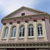
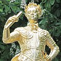

I'y a tchiques jours, l's étudgiants chantitent dans le Royal Square à l'occasion du Vier Marchi. Pour nous, ch'est un êvénement spécial, car i'y a tréjous eune bouonne audience, et j'aimons aidgi a vendre le pain et les mèrviel'yes chaque année pour gagni des sous pour le Royal Air Forces Association.
I'y a tchiques jours, l's étudgiants chantitent dans le Royal Square à l'occasion du Vier Marchi. Pour nous, ch'est un êvénement spécial, car i'y a tréjous eune bouonne audience, et j'aimons aidgi a vendre le pain et les mèrviel'yes chaque année pour gagni des sous pour le Royal Air Forces Association.
En pâlant du Square nos ramémouaithait d' un video pour aidgi l's étudgiants à apprendre la langue jèrriaise et j'avons ramassé du fond d'nouotre pagas un morcé d'papi tchi cont'nait le "script", et au jour d'aniet, j'voulons vos conduithe en ville pour visiter les marchiers.
I'y a bein d's années, le Royal Square n'tait pon comme ch'n'est achteu. I'n'y avait pon de bouais, et sans doute, ch'tait eune pliaiche bein fraide et ouerte à touos les sept vents de l'hivé. Le seule marchi d'la ville s'trouvait ichîn, et les campagnards v'naient de partout l'île chaque s'maine, le pus souvent à pid, pour vendre lus récoltes et les bestchias, pour acater lus bésoins, et sans doute pour bagouler auve lus anmins ou pour pitchi des lédgeunmes pouôrries sus les malfaiteurs dans lé pilôsi ou lé ché. Dans chu temps-là, i'n'y avait pon de pavage, et en hivé, le vier marchi 'tait eune pliaiche cracheuse, pliein du pité et saleté. Vers 1670, l'marchi fut pavé, et la Halle à Fronment fut bâti. En d'dans, nou peut acquo vai les arches en granit eyou qu'les marchands vendaient lus fronment, tandis qu'les marchands à viande avaient lus halle eyou que 'le Picquet House fut bâti pus tard.
Le Royal Square print san nom d'la statue du Rouai George II, portant d's habits romains, tchi fut minse en pliaiche en 1751; nou dit que ch'est eyou qu'la Crouaix d'la Ville 'tait d'vant. Rein que trente ans pus tard, en 1781, la Bataille d' Jèrri print pliaiche, le majeur Peirson etant tué au moment qu'les soudards jèrriaises et angliaiches gangnitent la victouaithe; un jour tchi dait êtr' célébré le 6 d'janvyi chaque année.
 Vers 1800, lé marchi tchittit le Square et s'trouvit eyou qu'il est achteu, ouaithe que l'bâtisse n'fut pon bâti qu'en 1882. Nou peut vai les grands heches, tchi 'taient à l'entrée du Marchi à Por temps passée. Au jour d'aniet, les bouochiers sont acquo ilo, a vendre d'la bidoche, mais à coté i'y a des boutiques eyou qu'i's vendent les flieurs, et pis la Halle à lédgeunmes et à fruit.
Vers 1800, lé marchi tchittit le Square et s'trouvit eyou qu'il est achteu, ouaithe que l'bâtisse n'fut pon bâti qu'en 1882. Nou peut vai les grands heches, tchi 'taient à l'entrée du Marchi à Por temps passée. Au jour d'aniet, les bouochiers sont acquo ilo, a vendre d'la bidoche, mais à coté i'y a des boutiques eyou qu'i's vendent les flieurs, et pis la Halle à lédgeunmes et à fruit.
A l'aut' côté de Beresford Street, i'y a lé Marchi à Paîsson; s'lon les paîssoniers, lus paîssons sont trèjous frais. Tchiquefais nou peut acater d's ormèrs, tchi sont aussi rares achteu comme les dents d' poule - eune d'licatesse seulement pour les vrais jèrriais. Temps passée, les pêtcheurs jèrriais v'naient chaque année à la Côte, en Gaspé, pour prendre d'la mouothue et du cap'lîn, et i'y a bein des gens au Canada au jour d'aniet tchi sont ordgilleux d'lus anchêtres jèrriaises.
Bein du monde s'ramemouaithent du Marchi à Bestchias, ou La Faithe, dans Minden Place, auve ses stâlles en granit. La Faithe freunmit auprès la Dgèrre, et à sa pliaiche achteu i'y a lé "Multi-Storey." I'y avaient d's aut's marchiers étout, à St. Aubin, à Gouoray, et probabliément auprès du Vier Havre. Au jour d'aniet, j'avons des nouvieaux marchiers - les Supermarchiers, eyou qu'nou peut acaté tous nos besoins dans un seul bâtisse - mais, en viyant l's efants qui sont trèjous a vresser entre l's ais, ch'est dammage qu'i' n'ont pon d'pilôsi ou d'ché.
 |
 |  |
 |  |
 |
Viyiz étout: